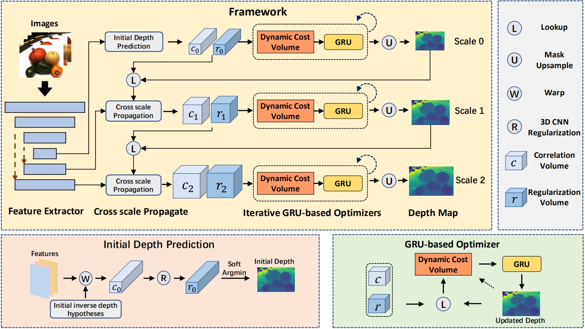
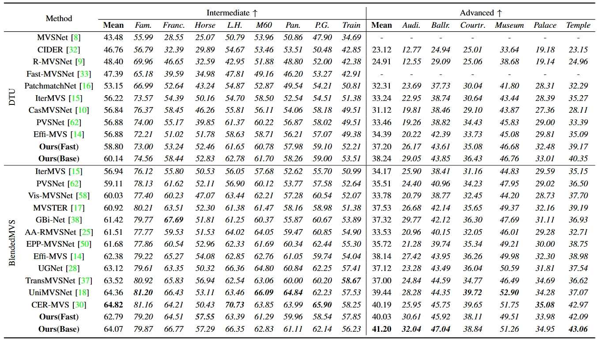
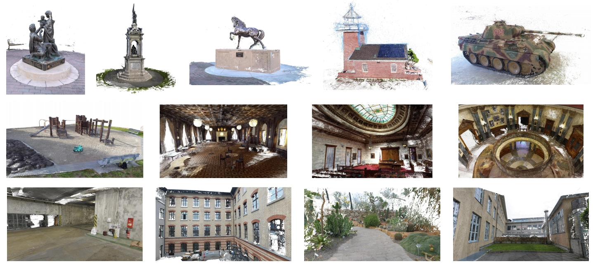

1Northwestern Polytechnical University
* denotes corresponding author
Currently, learning-based multi-view stereo (MVS) has been dominated by the pipeline of 3D cost volume and regularization network over the static cost volume for depth regression. However, this methodology is plagued by heavy time and memory consumption, which greatly hinders the applications of these methods for real-world high-resolution images. To address these challenges, we present Effi-MVS+, an efficient multi-scale dynamic cost volume based MVS method. Firstly, instead of constructing a static cost volume and predicting a probability distribution map for depth regression, we update the depth map by iteratively predicting depth residuals. In each iteration, we construct a lightweight dynamic cost volume by encoding local matching and regularization information. The dynamic cost volume is subsequently processed using a 2D convolution-based GRU, which owns significant advantages in computational complexity and efficiency. Secondly, we propose a cross-scale propagation mechanism to enhance the multi-scale dynamic cost volume. This mechanism facilitates the progressive aggregation of multi-scale information, thereby providing enhanced matching and regularization information. Thirdly, to further improve the efficiency, we provide a reliable initial depth map to launch the framework and guarantee fast convergence. Extensive experiments on the DTU and Tanks and Temples benchmarks demonstrate the superiority of our method, which outperforms other state-of-the-art methods by a large margin in terms of reconstruction quality, speed, and memory usage.
Comparison between different cost volume construction schemes and the corresponding representative works. Within the first three schemes (standard cost volume, recurrent cost volume, coarse-to-fine cost volume), the cost volume encodes the matching information and is then regularized to a probability map, which is ultimately regressed to a depth map. By contrast, our proposed multi-scale dynamic cost volume updates the depth map in an iterative way. In each iteration, the dynamic cost volume encodes both matching and regularization information and is then processed by the GRU optimizer to estimate the residual depth values.
Overall pipeline of our proposed method. Our method consists of a multi-scale feature extractor and GRU-based optimizers. Specifically, the GRU-based optimizer includes a dynamic cost volume constructor and a GRU module. At each scale, we iteratively construct a dynamic cost volume, which is processed by the GRU module to update the depth map. The cross-scale propagation (CSP) module is utilized to enhance the dynamic cost volume. Specifically, the CSP module propagates and enhances the matching and regularization information for the dynamic cost volume construction. Additionally, a reliable initial depth map is predicted at the coarsest scale to launch the framework and speed up convergence.
Comparison of the running time (s) and memory consumption (GB) on the DTU (Resolution: 1600 X 1184, 5 views), Tanks and Temples (Resolution: 1920 X 1056, 11 views) and ETH3D (Resolution: 2432 X 1600, 11 views) benchmarks between different methods.
Detailed quantitative results (the higher the better) of different methods on the Intermediate set and Advanced set of Tanks and Temples benchmark.
Point cloud reconstructions on the Tanks and Temples and ETH3D datasets. The reconstruction results of the Tanks and Temples dataset are presented in the first and second rows, while the reconstruction results of the ETH3D dataset are shown in the third row.
@ARTICLE{effimvsplus,
author={Wang, Shaoqian and Li, Bo and Dai, Yuchao},
journal={IEEE Transactions on Circuits and Systems for Video Technology},
title={Efficient Multi-View Stereo by Dynamic Cost Volume and Cross-Scale Propagation},
year={2024},
volume={34},
number={10},
pages={9414-9427}}